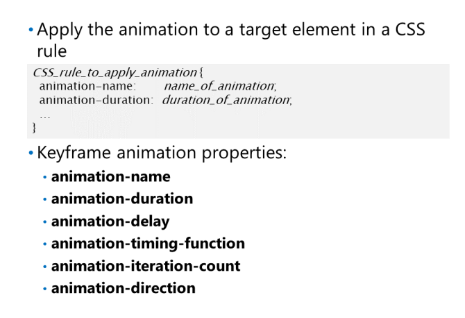
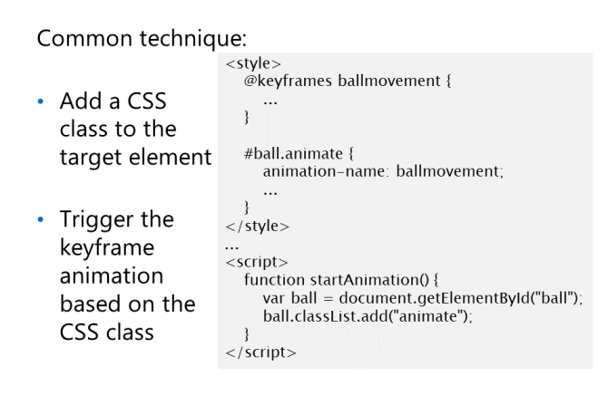

Aby użyć animacji keyframe na stronie internetowej,
Pierwszym krokiem jest zdefiniowanie reguły CSS @keyframes.
W ramach tej reguły definiujesz serię rule-sets
które mają zastosowanie w różnych punktach podczas
animacja. Punkty te są określone jako procent czasu, jaki upłynął od czasu trwania animacji.
Pierwszy rule-set jest oznaczony wartością 0% lub od. Ostateczny zestaw reguł jest oznaczony przez wartość
100% lub do. Możesz zdefiniować dowolną liczbę zestawów reguł, a ich kolejność nie ma znaczenia
Poniższy przykład definiuje animację keyframe o nazwie ballmovement. Animacja klatki kluczowej ma
cztery zestawy reguł, które opisują kolor i położenie piłki na stole bilardowym podczas animacji; piłka
zmienia również kolor podczas ruchu:
123
Configuring Keyframe Animation Properties

Po zdefiniowaniu animacji klatki kluczowej,
następnym krokiem jest skonfigurowanie właściwości animacji.
Musisz określić, kiedy animacja zostanie zastosowana
i jak długo to trwa. Opcjonalnie możesz także
określ opóźnienie przed rozpoczęciem animacji, a
liczba powtórzeń i czy animacja powinna
odwrócić się po zakończeniu.
Aby skonfigurować animację klatki kluczowej, zdefiniuj CSS
reguła, która stosuje animację klatki kluczowej do
element w dokumencie. Wewnątrz reguły CSS ty
można ustawić następujące właściwości, aby skonfigurować
animacja klatki kluczowej:
• animation-name: The name of the animation that you want to apply to the target element.
• animation-duration: The duration of the animation.
• animation-delay: An optional delay that occurs before the animation starts.
• animation-timing-function: Optional information about how the animation progresses over one
cycle. Possible values include "linear", "ease", "ease-in", "ease-out", and "ease-in-out". The
default value is "ease". You can define this property for the whole animation, or just for specific steps
in the @keyframe animation definition.
• animation-iteration-count: Optional iteration count. The default value is 1.
• animation-direction: Optional information about the direction the animation should play. The
default value is normal, which means the animation always plays in forward direction from start to
end. The other possible value is alternate, which means the animation reverses itself each time it
plays if the iteration count is more than 1.
Poniższy przykład konfiguruje animację klatki kluczowej dla elementu o nazwie piłka, który ma klasę CSS
nazwany animowanym. W tym przykładzie zastosowano animację klatki kluczowej ruchu kulowego opisaną w poprzednim
temat. Animacja potrwa 10 sekund i rozpocznie się po początkowym trzy sekundowym opóźnieniu. The
animacja użyje liniowej funkcji pomiaru czasu, która powoduje, że przeglądarka interpoluje wartości liniowo
między krokami klatki kluczowej. Animacja zostanie odtworzona dwukrotnie; pierwszy cykl będzie w kierunku do przodu, i
drugi cykl będzie w odwrotnym kierunku:
123
Programowe uruchamianie Keyframe Animation

W większości scenariuszy klatka kluczowa zostanie uruchomiona
animacje programowo w odpowiedzi na
zdarzenie. Na przykład, jeśli chcesz, aby animacja
zacznij jak tylko strona się załaduje, możesz
użyj zdarzenia load elementu body
do
uruchomić animację. Jeśli chcesz włączyć użytkowników
aby samodzielnie uruchomić animację, podaj
i obsłuż zdarzenie click.
Poniższy przykład obsługuje zdarzenie click
przycisk. Gdy użytkownik kliknie przycisk,
Funkcja startAnimation () dodaje animację
klasa do elementu kuli. To powoduje
#ball.animate Reguła CSS do zastosowania, która uruchamia animację klatki kluczowej ruchu kulki:
12312321
Handling Keyframe Events
Te wydarzenia to:
• animationstart: wskazuje, że keyframe
animation się rozpoczęła.
• animationiteration: wskazuje, że
iteracja animacji keyframe animation has
completed.
• animationend: wskazuje, keyframe
animation has ended.
Jeśli obsłużysz te zdarzenia, funkcja obsługi zdarzeń otrzyma argument zdarzenia, który ma właściwość
następujące właściwości:
• animationName: The name of the animation, such as ballmovement in the previous examples.
• elapsedTime: The total elapsed time of the animation so far, excluding any delay before the
animation started.
Poniższy przykład pokazuje, jak obsługiwać zdarzenia animacji klatki kluczowej dla elementu o nazwie ball